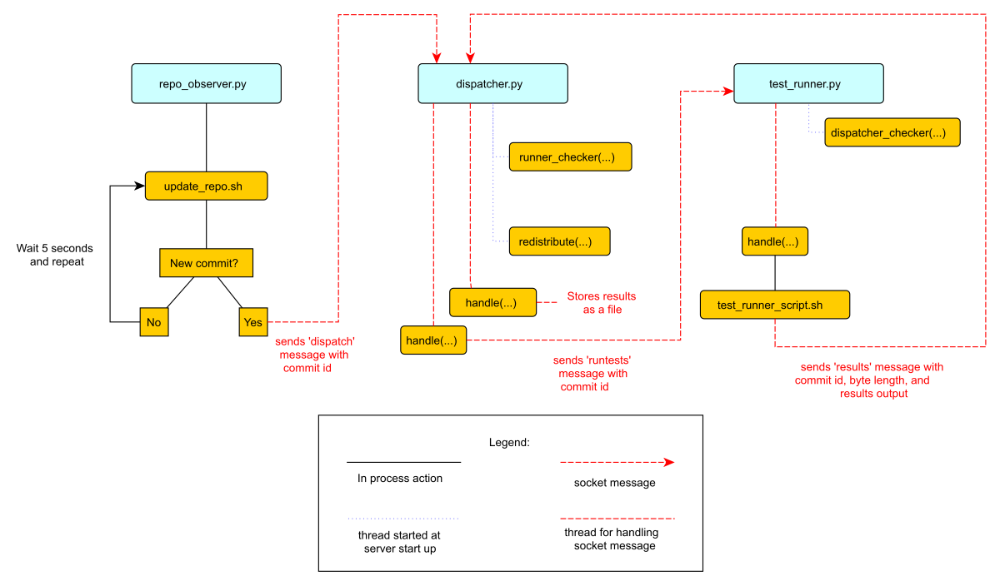

持续集成系统
Table of Contents
作者简介：Malini Das 是一个软件工程师，对于快速且安全的开发以及跨职能 (cross-functional)的问题情有独钟。她曾经作为基础工具工程师(tool engineer) 工作在Mozilla , 现在供职于Twitch。你可以在Twitter 或者她的blog 关注她。
什么是持续集成系统
在软件开发工程中，我们需要确保开发的新功能以及修复的Bugs能够如我们所愿的去做。 如何确保这些东西？那就是做测试。有时候，开发人员会在本地测试一下自己的改动是否安 全正确，但是他们或许没有时间去测试所有用到这些改动代码的系统。进一步来说，即使是在 本地做这项工作也是不可行的，因为这会消耗大量的时间。正因如此，所以有了 持续集成系统。
持续集成(CI)系统是用于测试新代码的专用系统。一个新的代码一旦提交(commit)到代码仓库， 它的职责是要确保这次的提交不会中断其他的测试。为了做到这一点，这个系统要能做到如下的几点：
- 获取新的代码提交
- 跑相应的测试
- 报告结果
另外一点和其他的系统类似，它应该具有容错性(failure resistant). 这意味着任何一部分出现了问题， 它都应能够从失败的位置恢复并继续测试。
同样的，这种测试系统应当能够解决负载，所以我们能够在较短的时间拿到测试的结果。我 们处理的方式是通过分布式和并行化来达到快速测试的目的。这个项目我们会演示一个小巧， 基础的，并且考虑了可扩展性的分布式持续集成系统。
项目的限制和一些说明
这个项目使用Git来作为测试使用的代码仓库。这里只会使用到一些标准的管理命令，所 以如果你对Git不熟悉，但是对其他的版本控制系统(VCS)比较熟悉同样也可以使用这个教程。 例如： SVN 或者 Mercurial 。
由于代码长度和单元测试的限制，我简化了测试的发现部分。我们只会在代码仓库中一个叫 tests 的目录中跑测试。
持续集成系统会检测主代码仓库(master repository), 它经常会被部署在网站主机上，而不是 本地的CI文件系统中。
持续集成系统不需要固定的时间，定期的进度安排，你可以在每次提交或每几次提交 做一次持续集成。对于这个项目，我们会周期的以5秒的间隔来做持续集成，也就是 每5秒检查一下代码的更新，但是最终只会对周期内的最新代码做一次持续集成。
设计的这个持续集成系统被用来周期性的检查代码仓库的更新。然而，在现实的情况中，我们还可以
通过代码提交来触发我们的持续集成。以Github为例，它会通过 pos-commit 的钩子来像一个URL地址
发送通知。这个URL指向的服务就会响应这个通知，然后去做持续集成。这里我们使用
观察者模型，仓库的观察者会定期检查，而不是通过被通知的方式。
CI系统中需要有报告者，其中测试组件将测试的结果发送给响应的系统，用来使人们看到结果的内容，例如一个 网页。为了简单起见，这个项目收集测试的结果并将它存储在一个文件中作为分发系统的一部分。
这个CI系统的架构只是使用了众多可能中的一个。使用这个的原因是它能把我们的代码简化 为三个主要的部分。
系统简介
这个持续集成系统包含3个部分：
- 观察者(an observer)
- 测试任务调度器(a test job dispatcher)
- 测试执行器(a test runner)
其中观察者会监控代码仓库的变化，一旦它监测到了代码的提交，它就会通知
测试任务调度器来进行调到。测试任务调度器会把提交代码的 commit id
告诉测试执行器，然后进行测试。
设计一个 CI 系统的架构有很多种的方式，我们可以将 观察者、 调度器 以及
测试执行器 在一个进程中执行。 但是这种方式不是很好，因为没有了负载处理，
如果有很多的提交需要去处理，这个 CI 系统是不能负担的起的，从而导致大量
的任务积压。另一个缺点是，这样的系统不具有容错鲁棒性。例如，如果执行测试
失败或者突然断电，因为没有后备系统(fallback systems), 后面的测试就不会
执行。一个理想的系统应该具有以下的两个特点：一是，能处理足够多的任务；二是，
在系统崩溃后能做一些补偿处理。
为了使我们的 CI 系统更加的鲁棒，以及承受更多的负载，我们对每一个模块分配一个
独立的进程，对每个进程我们可以有多个的实例。当有多个的测试任务需要同时去做的
时候，这是非常有用的。
在这个项目中，每个模块不仅运行在独立的进程中，而且他们通过 sockets 来
进行通信，这样我们就可以使他们分别运行在独立的主机上。每个模块会分配一个
唯一的 host/port 地址，同时每个进程通过分配给它们的地址来发送消息。
这种设计使我们快速部署到一个分布式系统上，用来应对硬件故障。我们可以让
observer ， dispatcher ， test runner ，分别运行在不同的机器上，它们之间可以通过网络进行通信。如果任何
一个机器不能工作，我们可以马上启用一个新的机器代替失败的机器。这样系统就具有了
一定的容错性(fail-safe)。
该项目不包括自动恢复代码，因为这取决于分布式系统的架构，但在现实世界中， CI系统在这样的分布式环境中运行，因此可以进行故障转移冗余。（例如：如果 一个进程所在的机器不能工作，我们可以替换到备用机器上）
为了达到这个项目的目的，我们会在本地手动的启动每个进程，并且分配不同的 本地端口。
项目文件
项目中每一个模块包含的Python文件如下：
- 仓库观察者:
repo_observer.py - 测试调度器:
dispatcher.py - 测试执行器:
test_runner.py
系统中的每个进程通过 sockets 来进行通信，因为这个项目各模块之间传递的
信息需要共享，所以这里会有一个 helpers.py 包含这些信息。有了
=helpers.py=就不需要在每个文件中都去重复包含一些相同功能的代码了。
同时，我们还会创建一个供这些进程使用的脚本文件。相比于使用Python中的
os 或者 subprocess 来执行 shell 或 git 命令，使用脚本文件要更加的方
便。
最后，会有一个测试文件，其中包含两个例子来测试这个 CI 系统是否能正常工作。
如果正常的话，一个测试会通过，另一个会故意让其失败。
项目的建立
虽然这个CI系统准备在分布式系统中工作，但让我们首先在一台本地计算机上本地运 行这一切，这样我们可以掌握CI系统的工作原理，而不会增加运行到网络相关问题 的风险。如果希望在分布式环境中运行，可以在自己的机器上运行每个组件。
持续集成系统通过监测代码仓库的变化来运行测试，我们需要建立一个 CI 系统监测的仓库。
我们就创建一个 test_repo 的仓库：
$ mkdir test_repo $ cd test_repo $ git init
$ cp -r /this/directory/tests /path/to/test_repo/ $ cd /path/to/test\_repo $ git add tests/ $ git commit -m "add tests"
$ git clone /path/to/test_repo test_repo_clone_obs
$ git clone /path/to/test_repo test_repo_clone_runner
系统组件
代码仓库观察者( repo_observer.py)
def poll(): parser = argparse.ArgumentParser() parser.add_argument("--dispatcher-server", help="dispatcher host:port, " \ "by default it uses localhost:8888", default="localhost:8888", action="store") parser.add_argument("repo", metavar="REPO", type=str, help="path to the repository this will observe") args = parser.parse_args() dispatcher_host, dispatcher_port = args.dispatcher_server.split(":")
while True: try: # call the bash script that will update the repo and check # for changes. If there's a change, it will drop a .commit_id file # with the latest commit in the current working directory subprocess.check_output(["./update_repo.sh", args.repo]) except subprocess.CalledProcessError as e: raise Exception("Could not update and check repository. " + "Reason: %s" % e.output)
#!/bin/bash source run_or_fail.sh
bash rm -f .commit_id
run_or_fail "Repository folder not found!" pushd $1 1> /dev/null run_or_fail "Could not reset git" git reset --hard HEAD
COMMIT=$(run_or_fail "Could not call 'git log' on repository" git log -n1) if [ $? != 0 ]; then echo "Could not call 'git log' on repository" exit 1 fi COMMIT_ID=`echo $COMMIT | awk '{ print $2 }'`
run_or_fail "Could not pull from repository" git pull COMMIT=$(run_or_fail "Could not call 'git log' on repository" git log -n1) if [ $? != 0 ]; then echo "Could not call 'git log' on repository" exit 1 fi NEW_COMMIT_ID=`echo $COMMIT | awk '{ print $2 }'`
# if the id changed, then write it to a file if [ $NEW_COMMIT_ID != $COMMIT_ID ]; then popd 1> /dev/null echo $NEW_COMMIT_ID > .commit_id fi
if os.path.isfile(".commit_id"): try: response = helpers.communicate(dispatcher_host, int(dispatcher_port), "status") except socket.error as e: raise Exception("Could not communicate with dispatcher server: %s" % e) if response == "OK": commit = "" with open(".commit_id", "r") as f: commit = f.readline() response = helpers.communicate(dispatcher_host, int(dispatcher_port), "dispatch:%s" % commit) if response != "OK": raise Exception("Could not dispatch the test: %s" % response) print "dispatched!" else: raise Exception("Could not dispatch the test: %s" % response) time.sleep(5)
调度器 ( dispatcher.py)
def serve(): parser = argparse.ArgumentParser() parser.add_argument("--host", help="dispatcher's host, by default it uses localhost", default="localhost", action="store") parser.add_argument("--port", help="dispatcher's port, by default it uses 8888", default=8888, action="store") args = parser.parse_args()
server = ThreadingTCPServer((args.host, int(args.port)), DispatcherHandler) print `serving on %s:%s` % (args.host, int(args.port)) ... runner_heartbeat = threading.Thread(target=runner_checker, args=(server,)) redistributor = threading.Thread(target=redistribute, args=(server,)) try: runner_heartbeat.start() redistributor.start() # Activate the server; this will keep running until you # interrupt the program with Ctrl+C or Cmd+C server.serve_forever() except (KeyboardInterrupt, Exception): # if any exception occurs, kill the thread server.dead = True runner_heartbeat.join() redistributor.join()
def runner_checker(server): def manage_commit_lists(runner): for commit, assigned_runner in server.dispatched_commits.iteritems(): if assigned_runner == runner: del server.dispatched_commits[commit] server.pending_commits.append(commit) break server.runners.remove(runner) while not server.dead: time.sleep(1) for runner in server.runners: s = socket.socket(socket.AF_INET, socket.SOCK_STREAM) try: response = helpers.communicate(runner["host"], int(runner["port"]), "ping") if response != "pong": print "removing runner %s" % runner manage_commit_lists(runner) except socket.error as e: manage_commit_lists(runner)
def redistribute(server): while not server.dead: for commit in server.pending_commits: print "running redistribute" print server.pending_commits dispatch_tests(server, commit) time.sleep(5)
def dispatch_tests(server, commit_id): # NOTE: usually we don't run this forever while True: print "trying to dispatch to runners" for runner in server.runners: response = helpers.communicate(runner["host"], int(runner["port"]), "runtest:%s" % commit_id) if response == "OK": print "adding id %s" % commit_id server.dispatched_commits[commit_id] = runner if commit_id in server.pending_commits: server.pending_commits.remove(commit_id) return time.sleep(2)
class ThreadingTCPServer(SocketServer.ThreadingMixIn, SocketServer.TCPServer): runners = [] # Keeps track of test runner pool dead = False # Indicate to other threads that we are no longer running dispatched_commits = {} # Keeps track of commits we dispatched pending_commits = [] # Keeps track of commits we have yet to dispatch
class DispatcherHandler(SocketServer.BaseRequestHandler): """ The RequestHandler class for our dispatcher. This will dispatch test runners against the incoming commit and handle their requests and test results """ command_re = re.compile(r"(\w+)(:.+)*") BUF_SIZE = 1024 def handle(self): self.data = self.request.recv(self.BUF_SIZE).strip() command_groups = self.command_re.match(self.data) if not command_groups: self.request.sendall("Invalid command") return command = command_groups.group(1)
if command == "status": print "in status" self.request.sendall("OK")
elif command == "register": # Add this test runner to our pool print "register" address = command_groups.group(2) host, port = re.findall(r":(\w*)", address) runner = {"host": host, "port":port} self.server.runners.append(runner) self.request.sendall("OK")
测试组件( test_runner.py)
class ThreadingTCPServer(SocketServer.ThreadingMixIn, SocketServer.TCPServer): dispatcher_server = None # Holds the dispatcher server host/port information last_communication = None # Keeps track of last communication from dispatcher busy = False # Status flag dead = False # Status flag
控制流程图
Figure 1描述了这个系统运行流程。这个流程图假定了所有这个三个文件(
repo_observer.py , dispatcher.py 以及 test_runner.py)已经正在运行。并且说
明了每个进程在有新提交时需要执行的操作。

Figure 1: 控制流程图
运行代码
$ python dispatcher.py
$ cd /path/to/test_repo
$ touch new_file
$ git add new_file
$ git commit -m"new file" new_file
错误处理
该CI系统包括一些简单的错误处理。如果你杀死了 test_runner.py 那么
dispatcher.py 将会知道这个运行程序不再可用，并且将它从池中删除。你也可以强制杀
死测试组件，用来模拟机器的崩溃或者网络连接的失败。如果你这样做了调度器会发现一个
不可用的测试组件，并且将池中可用的测试组件代替之前的那个。如果池中没有可用的，它
会等待一个新的组件在池中注册。
如果你把调度器杀死，仓库的观察者就会发现这个问题，并且会抛出一个异常。测试组件同 样也会发现这个问题，并且会关闭自己。
结论
通过将问题分解为几个不同的过程，我们得以建立一个基础的分布式持续构建系统。每个 进程之间通过socket请求来互相通信，这使得我们可以分布式的进行构建，同时会使得我们的 系统更加的可靠以及增加了扩展性。
因为这里的CI系统相当的简单，你可以自己扩展使得它更加的实用。这里提供几条改进的 建议：
测试每个提交
当前的系统会周期性的检查最新的几次提交，并对最新的一次做自动构建。这里应该改 进为每次提交都进行一次测试。为了做到这一点，我们可以改进周期检查器，对于每个最后 一次测试的和最新一次之间的提交都分配一个测试组件。
智能测试
如果测试组件发现调度器没有响应，它就会停止运行，即使一个测试进行到了一半！如 果让测试组件等待调度器一个周期性的时间（or indefinitely, 如果你对资源管理不关心 的话）会更加的好。在这个例子中，如果一个测试组件在测试过程中，调度器失去了响应， 相比于停止测试组件，我们可以让其完成这个测试，等待调度器恢复，并且向测试组件报告 结果。这样做就不会是使测试组件的工作浪费，同时对于每一次的提交只会运行一次测试。
真实报告
在真实的CI系统中，我们会提供一个测试结果的报告到报告服务，这个报告服务有以下 几点的功能：
- 收集测试结果
- 展示结果，方便去浏览检查
- 当失败或者值得注意的事情发生时，通知相应的人员
你可以通过创建一个新的进程，用来代替调度器获取测试结果来扩展这个简单的CI系统。 这个新的进程可以是一个web服务（或者能够连接到web服务器)。它能够在线提交结果，同时能 通过邮件来告知订阅者失败的测试。
测试组件管理器
当前，你需要手动的运行 test_runner.py 文件来启动一个测试组件。相反，你可以通过创建一个
测试组件管理器。它能够评估调度器发送的测试请求的负载，并且相应的调整测试
组件的数量。
通过这些建议，你可以使得这个简单的CI系统更加的鲁棒，以及具有容错性。同时，你 可以将这个系统与其他的系统相集成，例如基于web的测试报告系统。
如果你想看到一个持续集成系统的灵活性所能达到的水平，我建议你去看下 Jenkins 。
它是一个非常鲁棒的，用Java语言写的开源CI系统。它提供了一个基本的CI系统，而这个
可以通过插件进行扩展。你可以在Github上找到它的源码。另外， Travis CI 也是一个值得推荐的项目，使用的
ruby语言。同样的，也可以在GitHub上找到源码。
这是一个练习用来帮助你理解一个CI系统是如何工作的，以及如何自己去构建一个这样的 系统。现在，你应该对如何构建一个可靠的分布式系统有很深的理解，并且能够使用 这种知识去做出更加复杂的解决方案。